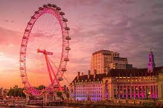
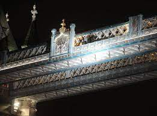
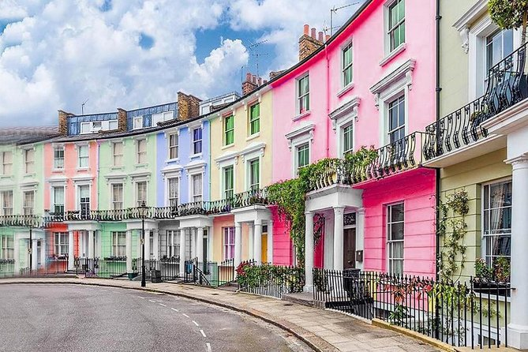
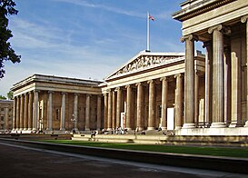
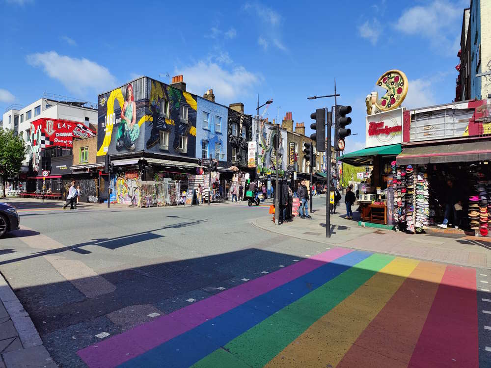

Londres y su belleza.
Londres, un lugar lleno de magia.
Lugares que visitar si viajas a Londres.
¿Alguna vez has pensado que lugares te gustaría visitar en tu proxímo viaje? Si tu destino es Londres, aquí encontrarás una serie de monumentos y lugares bonitos que visitar:
Monumentos importantes:
London eye
El London Eye es una noria gigante en el South Bank de Londres. Con 135 metros de altura, ofrece vistas panorámicas impresionantes de la ciudad, siendo una de las atracciones más populares para los visitantes que desean disfrutar de una experiencia única y vistas espectaculares de Londres.

Tower bridge
El Tower Bridge es un icónico puente levadizo sobre el río Támesis en Londres. Con sus torres gemelas y pasarela suspendida, combina el estilo gótico victoriano con tecnología avanzada del siglo XIX. Es un punto turístico destacado y símbolo reconocido de la ciudad.

Big ben
El Big Ben es el nombre popularmente dado al Gran Reloj de la Torre, ubicado en el Palacio de Westminster en Londres. Es famoso por su precisión y su campana de gran tamaño. Este reloj icónico es un símbolo reconocido mundialmente de la ciudad.
Aqui puedes ver un video con otros monumentos que visitar
Lugares bonitos que visitar:
Nottin Hill
Notting Hill es un encantador barrio en el oeste de Londres, famoso por su mercado de Portobello Road, casas de colores pastel y diversidad cultural. Destaca por el Carnaval de Notting Hill, un vibrante festival que celebra la cultura afrocaribeña. Es un lugar popular tanto para locales como para turistas que buscan experiencias auténticas y eclécticas en la capital británica.

Museo Británico
El Museo Británico, situado en Londres, es uno de los museos más importantes del mundo. Fundado en 1753, alberga una vasta colección de arte y artefactos de diversas culturas y épocas, incluyendo la Piedra Rosetta y los mármoles del Partenón. Es famoso por su entrada gratuita y es una visita obligada para los amantes del arte y la historia.

Camdem Town
Camden Town es un barrio alternativo en el norte de Londres, famoso por su mercado y su vibrante escena musical. Es conocido por su ambiente ecléctico y su diversidad cultural, atrayendo tanto a locales como a turistas en busca de experiencias únicas.
